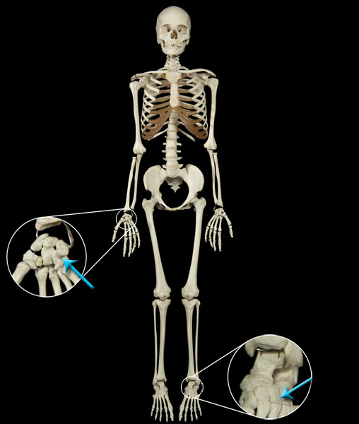

Plane Joint
Plane joints (also known as gliding joints) exist at a joint between two bones that are mostly flat. Plane joints allow a slight gliding movement. They are classified as uniaxial due to the fact that they are normally attached to ligaments which restrict their movement to a single plane. Joints between the carpals of the hand or between the tarsals of the foot are considered plane joints.
